User Space, Kernel, Hardware
Exploring Linux Drivers with Rust Cyril Marin & René Ribaud
Run of show — presenter notes only Audience: knows what Rust is, concepts not assumed; light Linux knowledge. English slides. 42 minutes prepared + 3 minutes margin; Q&A after 45. Approximate lead time: René 25:30 / Cyril 16:30, demos included. Rehearsal required: these are targets, not measured delivery times.
Part Total Demo René Cyril Introduction 06:30 — 05:00 01:30 QEMU 05:00 01:30 02:45 02:15 01 06:00 02:00 03:30 02:30 02 04:00 01:30 02:30 01:30 03 03:00 01:00 01:45 01:15 04 04:00 01:30 02:30 01:30 05 03:00 01:00 01:30 01:30 06 09:00 03:30 04:45 04:15 Conclusion 01:30 — 01:15 00:15 Total 42:00 12:00 25:30 16:30
PRE-FLIGHT: build all stages before the talk. Boot make run RGB_DRIVER_STAGE=01-character-device. Host: uv run tools/rgb_viewer.py. Open a second guest terminal via ssh -p 2222 root@localhost (set password beforehand). Do not load rgb or create its node until stage 01. Copy each built module to /tmp/rgb-01.ko … /tmp/rgb-06.ko and both driver Python clients to /tmp. Source pattern: .build/buildroot-output/STAGE/build/linux-6.18.7/samples/rust/rgb.ko. Use scp -O -P 2222 for Dropbear. Keep this VM for every stage. No builds during the talk. Wait for workers to finish and close clients before rmmod. Stage 03 and 05 are optional cuts only after rehearsal; cut their whole blocks and use the transition written in their notes. Demos have explicit stop times and fallback observations; no recordings are assumed available.
[RENÉ] 15 seconds · 00:00–00:15 cumulative.
Welcome. Promise one complete trip from a program to hardware and back.
[RENÉ] 15 seconds · 00:15–00:30 cumulative.
Acknowledge sponsors briefly; do not read every logo.
Who are we?
Cyril Marin
René “Uggla” Ribaud
[BOTH] 45 seconds · 00:30–01:15 cumulative.
[RENÉ — 30s] Brief introduction. [CYRIL — 15s] Introduce yourself in your own words. [PASSAGE] René takes the personal story.
Software can move something.
A motorized Mac disk drive.
As a child, this blew my mind. 🤯
Macintosh SE/30 Ejecting a Floppy — Gregory Pushins · final 5 seconds
[RENÉ] 45 seconds · 01:15–02:00 cumulative.
Personal story to elaborate with René: that fascination started when I was a child. Keep one concrete childhood memory. Do not invent a Mac model, year or extra anecdote: the SE/30 in this video illustrates the mechanism and does not identify René’s childhood Mac. The local clip loops silently on entering the slide and pauses on leaving. It contains the last 5 seconds of the video stream from Gregory Pushins, “Macintosh SE/30 Ejecting a Floppy”: https://www.youtube.com/watch?v=JPMvErNcoGA, retrieved 2026-11-10. Trimmed from the end of the video stream, audio removed, encoded as H.264 MP4 for playback without a network connection. Source attribution remains visible below the clip. [PASSAGE] Cyril: how did this become a talk?
Looking for something to control
Lenovo LEDproprietary / firmware barrier
→ A simple LEDdriver already exists
→ Keyboard LEDdriver already exists
[CYRIL] 45 seconds · 02:00–02:45 cumulative.
Suggested speaking slot: tell this exploration in your own words with René; do not attribute experiments you did not do. The repeated discovery is that Linux already has drivers for these ideas. [PASSAGE] René continues the search.
Then we changed the question
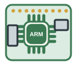
Raspberry Pi GPIO
driver already exists → 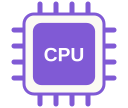
ARM gives us an idea
→ Build our own peripheral
[RENÉ] 30 seconds · 02:45–03:15 cumulative.
GPIO suggests ARM and designing a device ourselves. This leads to the next question: can we build that hardware in software? The following slide introduces QEMU. No need to claim that real LEDs cannot be controlled.
QEMU can emulate our hardware
A fantastic project: CPUs, boards and peripherals in software.
The user experience can be rough.
3.5 million lines can feel intimidating.
3,545,344 text lines · QEMU revision 8f1d3b586f
[RENÉ] 45 seconds · 03:15–04:00 cumulative.
After the Raspberry Pi / ARM idea, introduce QEMU as the way to implement our own peripheral and run a real guest Linux driver against it. The comments about UX and intimidation are our experience, not a benchmark. We only need one small device model. SIZE CHECK (2026-11-10): QEMU submodule 8f1d3b586f1265023f75ea9c227c35d463321aef has 3,545,344 physical lines across 10,826 tracked UTF-8 text files; includes comments, blank lines, docs and tests, excludes binaries, symlinks and nested submodule contents. Count files from git ls-files -z, read UTF-8 files and sum len(bytes.splitlines()). This is a text-line count, not SLOC; 20 million was not substantiated. Upstream also stresses scope-dependent totals: QEMU, Bugpocalypse (2026-09-23) reports 5–11.5 million depending on counting. These are different scopes, not directly comparable figures. [PASSAGE] René introduces the learning resources before following one command through the three worlds.
Image: “Kew the Angry Emu”, Benoît Canet / QEMU Community, CC BY 3.0 . Unmodified copy of vendor/qemu/ui/icons/qemu.svg; original attribution and license metadata retained in the SVG.
Learning drivers is more approachable today
The book explains the foundations.
LLMs help us explore unfamiliar code and APIs.
We can ask, experiment and verify in the VM.
[RENÉ] 30 seconds · 04:00–04:30 cumulative.
Introduce Linux Device Drivers, third edition, as the classic reference for the driver concepts. The book targets Linux 2.6.10 and C, so use it for the model, not as the current Rust API reference. Today LLMs make entry easier by explaining code, tracing calls, helping read unfamiliar APIs and interpreting build errors. Work with the sources for our pinned kernel, then compile and run the VM to check an explanation. Suggested wording, not an invented claim about when either speaker read the book. Book and authors: LDD3 website . Cover artwork: O’Reilly Media, obtained from the Apple Books listing (https://is1-ssl.mzstatic.com/image/thumb/Publication/40/5a/36/mzi.hihqvhaa.jpg/600x600wz.jpg), downloaded 2026-11-10, unmodified. [PASSAGE] René returns to the application / kernel / hardware journey.
One command, three worlds
Applicationecho FF0000
→ 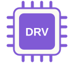
Linux
our Rust driver
→ QEMU
A driver translates software requests into hardware operations.
[RENÉ] 45 seconds · 04:30–05:15 cumulative.
Assume only light Linux knowledge. User space is where normal applications run. Kernel space controls shared resources and hardware access. QEMU models the hardware; the guest driver behaves as if it were a real peripheral.
Linux is the kernel in our VM
The kernel manages processes, memory and devices.
Our driver runs inside it as a loadable module.
The root filesystem contains the shell, Python and tools.
[RENÉ] 30 seconds · 05:15–05:45 cumulative.
Give the minimum vocabulary before the first module demo. The kernel is the central component of the guest system; the root filesystem provides the programs and files around it. A loadable module is kernel code that Linux can add while running, which lets us replace the RGB driver during this talk. Keep user programs and kernel code distinct. [PASSAGE] Cyril: who prepares all these pieces for the VM?
Image: tux-flat.png, unmodified from vendor/buildroot/docs/website/images/, at the pinned Buildroot revision. The Linux mascot is Tux.
Buildroot prepares our Linux environment
Build toolsRust + cross-compiler
+ Linuxkernel + our module
+ Root filesystemshell + Python
A reproducible ARM64 system for our QEMU board.
[CYRIL] 30 seconds · 05:45–06:15 cumulative.
Suggested Cyril speaking slot: explain the workshop setup without doing a live build. Buildroot assembles the cross-compilation tools, guest Linux kernel and root filesystem. Our external configuration enables Rust and injects the selected module. The cross-compiler runs on the host and produces ARM64 guest code; QEMU itself is built on the host separately. All stages and images are prepared before the talk. Reference: Buildroot project . [PASSAGE] René previews the steps, then opens the virtual electronics bench.
Buildroot logo: unmodified copy of vendor/buildroot/docs/website/images/logo.png from the pinned submodule.
Build one boundary at a time
Registers → file → MMIO → discovery
Command → worker → hardware completion
Explain a little. Observe it working. Repeat.
[RENÉ] 15 seconds · 06:15–06:30 cumulative.
Announce six driver stages plus a hardware demonstration. Rust familiarity is not required beyond knowing what the language is. Explain syntax only when it illuminates the mechanism.
Our virtual hardware
User space Linux kernel Hardware
QEMU is our electronics bench
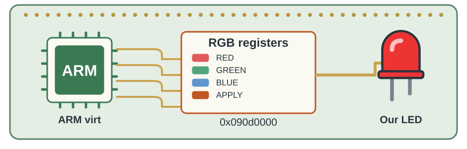
The peripheral is C code. Linux sees physical registers.
[RENÉ] 15 seconds · 06:30–06:45 cumulative.
A virtual machine needs virtual hardware. We implement the other side of the hardware contract, not a mock of the Linux driver API.
Our virtual hardware
User space Linux kernel Hardware
What does the device expect?
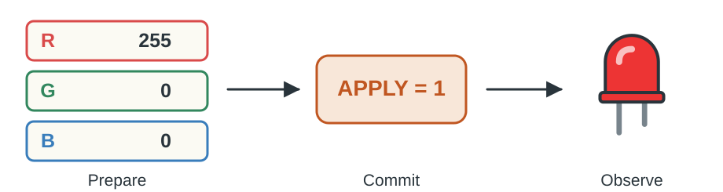
Prepare the color. Apply it when ready.
[CYRIL] 45 seconds · 06:45–07:30 cumulative.
Suggested speaking slot: explain the hardware protocol before showing numbers. Ask what might happen if APPLY is written before all three channels. [PASSAGE] René gives the register map.
Our virtual hardware
User space Linux kernel Hardware
Registers are the device vocabulary
enum {
RGB_LED_REG_RED = 0x00,
RGB_LED_REG_GREEN = 0x04,
RGB_LED_REG_BLUE = 0x08,
RGB_LED_REG_APPLY = 0x0c,
};Base: 0x090d0000 · aligned 32-bit accesses
[RENÉ] 25 seconds · 07:30–07:55 cumulative.
Define register and offset concretely: address = base + offset. Channels use values 0–255, but accesses are 32-bit. Keep STATUS and fade registers for stage 06.
Our virtual hardware
User space Linux kernel Hardware
The device keeps its state in a struct
struct RGBLedState {
SysBusDevice parent_obj;
MemoryRegion mmio;
uint8_t red;
uint8_t green;
uint8_t blue;
// Fade, IRQ and transport fields omitted.
};Offsets describe the interface. Fields hold the state.
[RENÉ] 30 seconds · 07:55–08:25 cumulative.
Excerpt from device/qemu/rgb-led.c. The enum on the previous slide defines bus offsets; this struct is QEMU internal state, not a packed register layout. MemoryRegion connects accesses to the read/write callbacks. APPLY is a command and has no stored field; reading it returns zero. Stage-06 state and host observation fields are omitted. [PASSAGE] René shows how a bus write changes this state.
Our virtual hardware
User space Linux kernel Hardware
A register write becomes a callback
switch (offset) {
case RGB_LED_REG_RED:
s->red = value & 0xff;
break;
case RGB_LED_REG_APPLY:
if (value == 1) {
rgb_led_apply(s);
}
break;
}Essential excerpt · surrounding setup and error handling omitted
[RENÉ] 45 seconds · 08:25–09:10 cumulative.
QEMU dispatches bus writes by offset. The state is a C structure. Show only RED and APPLY; GREEN and BLUE follow the same idea.
Our virtual hardware
User space Linux kernel Hardware
Give it a place on the board
ARM virt board
→ 0x090d0000
→ RGB registers
[RENÉ] 10 seconds · 09:10–09:20 cumulative.
The integration patch maps the device on the board and describes it to Linux. Defer firmware discovery to stage 03. Next, René shows how we launch that board.
Our virtual hardware
User space Linux kernel Hardware
Boot our virtual board
IMAGES=.build/buildroot-output/01-character-device/images
.build/qemu/qemu-system-aarch64 -machine virt -cpu cortex-a57 -m 1G \
-nographic -serial mon:stdio -kernel "$IMAGES/Image" \
-append "console=ttyAMA0 root=/dev/vda" \
-drive file="$IMAGES/rootfs.ext4",if=none,id=hd0,format=raw \
-device virtio-blk-device,drive=hd0 \
-netdev user,id=net0,hostfwd=tcp::2222-:22 \
-device virtio-net-device,netdev=net0 \
-chardev socket,id=rgb_led,path=.build/rgb-led.sock,server=on,wait=off \
-global rgb-led.chardev=rgb_led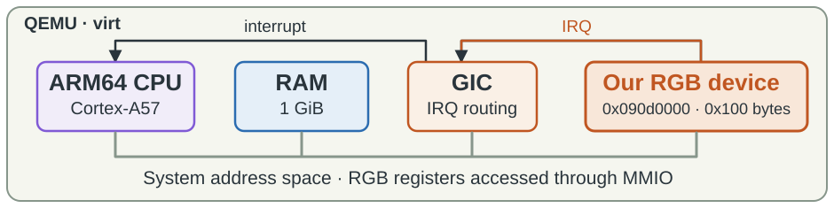
Demo shortcut: make run RGB_DRIVER_STAGE=01-character-device
[RENÉ] 40 seconds · 09:20–10:00 cumulative.
HOST command, from the repository root, shown to explain the VM setup; the guest is already booted before the talk. This is the launch configuration from Makefile run, with relative paths and an IMAGES variable for readability. The target additionally creates .build/tmp and sets TMPDIR. Focus on -machine virt, -kernel and the root disk; the remaining flags provide the serial console, SSH forwarding and the LED observation socket. rgb-led is instantiated by our patched virt board: no separate -device rgb-led flag is needed. The Make shortcut prepares dependencies, so do not invoke a rebuild live. The board overview shows Cortex-A57, one GiB RAM, GIC and our extra MMIO window at 0x090d0000 (0x100 bytes). The device IRQ is connected to GIC SPI 10 by integrations/qemu/0001-hw-arm-wire-the-RGB-LED-device-into-virt.patch. The IRQ is used only by stage 06; postpone those details. Keep the same VM through all driver stages. [PASSAGE] Cyril: can we use these registers before writing a driver?
Our virtual hardware
User space Linux kernel Hardware
Demo · Talk directly to registers
devmem 0x090d0000 32 0xff
devmem 0x090d0004 32 0x00
devmem 0x090d0008 32 0x00
devmem 0x090d000c 32 0x01Observe: the circle turns red.
[CYRIL] 90 seconds · 10:00–11:30 cumulative.
PREP: boot the prebuilt stage-01 VM before the talk; keep rgb unloaded. Host: uv run tools/rgb_viewer.py. QEMU must have been launched with make run RGB_DRIVER_STAGE=01-character-device so the Unix color socket is configured. Commands shown are GUEST commands. Optional monitor inspection: Ctrl-a c, xp /4wx 0x090d0000, Ctrl-a c. Do not spend time on the monitor if behind. EXPECT: rgb-led: apply RGB(255, 0, 0). FALLBACK: state the expected red circle using this slide; do not pretend a failed demo succeeded. Stop at 90s. [PASSAGE] René: now build the application-to-kernel boundary.
Stage 01 · Character device
User space Linux kernel Hardware
Can a file control a device?
echo FF0000 > /dev/rgb
The path connects an application to our driver.
[RENÉ] 30 seconds · 11:30–12:00 cumulative.
Define character device: a file-like entry whose operations are handled by a driver. It is not an ordinary file storing the text.
Stage 01 · Character device
User space Linux kernel Hardware
Follow one write
shellwrite()
→ VFS
→ our device
[RENÉ] 45 seconds · 12:00–12:45 cumulative.
Define syscall: controlled entry into the kernel. Define VFS briefly as Linux common file interface. The shell opens the device then writes seven bytes including newline. Here “our device” means the Linux character device: its registered callback receives the bytes, not the QEMU peripheral directly. Callback means a function registered for Linux to call.
Stage 01 · Character device
User space Linux kernel Hardware
Major and minor identify the destination
/dev/rgb
→ major
→ minor 0
mknod creates that association.
[RENÉ] 30 seconds · 12:45–13:15 cumulative.
Explain why the pathname alone is not enough. Major is dynamically allocated; read /proc/devices rather than assume 240. Create the node once in the demonstration session; recreate only if the major changes or the VM reboots.
Stage 01 · Character device
User space Linux kernel Hardware
Register the device and its callbacks
raw_fops.open = Some(rgb_open);
raw_fops.write = Some(rgb_write);
let fops = KBox::new(raw_fops, GFP_KERNEL)?;
bindings::alloc_chrdev_region(
&mut dev, 0, 1, c_str!("rgb").as_char_ptr());
bindings::cdev_init(cdev_ptr, ptr::from_ref(&*fops));
bindings::cdev_add(cdev_ptr, dev, 1);Excerpts from RgbModule::init · allocations, unsafe blocks and error handling omitted
Allocate a number → attach operations → publish the device.
[RENÉ] 60 seconds · 13:15–14:15 cumulative.
Explain the three steps, not every C type. module! connects loading the module to RgbModule::init. The operations table assigns open/write callbacks; KBox gives it a stable allocated address. alloc_chrdev_region allocates the major/minor range, cdev_init associates the table, cdev_add makes that range callable. The actual source allocates cdev, wraps C calls in unsafe with safety comments, checks all return values and unwinds failures. These are separated source excerpts, not a standalone safe function. mknod remains a separate step to create the user-visible path. [PASSAGE] René follows the bytes into the write callback.
Stage 01 · Character device
User space Linux kernel Hardware
User memory needs a checked copy
let user_ptr = UserPtr::from_ptr(user_buffer.cast_mut().cast());
let mut reader = UserSlice::new(user_ptr, count).reader();
reader.read_slice(&mut buffer[..count])?;Essential excerpt · surrounding setup and error handling omitted
Copy first. Validate the color next.
[RENÉ] 30 seconds · 14:15–14:45 cumulative.
This is after count was checked against buffer size. Explain &: borrowing an existing value; ? propagates a failure. A user pointer is not safe to dereference directly. The helper performs a checked copy. Avoid teaching generic lifetime notation here.
Stage 01 · Character device
User space Linux kernel Hardware
Rust helps us own the resources
Acquire a resource → keep its owner alive.
Drop releases it when that owner goes away.
unsafe marks obligations at the C interface.
[RENÉ] 15 seconds · 14:45–15:00 cumulative.
Explain ownership as responsibility for cleanup, not a Rust language lecture. The manual cdev registration has unsafe C boundaries; Rust does not automatically prove arbitrary C pointer lifetimes. Full registration and unwind paths stay in the repository. [PASSAGE] Cyril loads and uses the stage-01 module.
Stage 01 · Character device
User space Linux kernel Hardware
Demo · Linux receives the color
modprobe rgb
lsmod
major=$(awk '$2 == "rgb" { print $1 }' /proc/devices)
mknod /dev/rgb c "$major" 0
echo 00FF00 > /dev/rgbObserve: Linux logs green. The LED stays red.
[CYRIL] 120 seconds · 15:00–17:00 cumulative.
GUEST commands. PREP: stage-01 VM kept from hardware demo, rgb not loaded, /dev/rgb not yet created. The prior hardware demo left the LED red: green is deliberately different so no hardware update is obvious. EXPECT: requested color r=0 g=255 b=0; no QEMU apply line. FALLBACK: point to the expected contrast on the slide. Limit loading/node setup to this demo, 120s maximum.
Stage 01 · Character device
User space Linux kernel Hardware
One boundary works. One is missing.
Application ✓
→ Driver ✓
→ No hardware access yet
[CYRIL] 30 seconds · 17:00–17:30 cumulative.
Interpret the observation rather than only operate the terminal: receiving bytes is distinct from controlling the peripheral. [PASSAGE] René: connect the driver to the registers.
Stage 02 · MMIO
User space Linux kernel Hardware
A physical address is not a Rust pointer
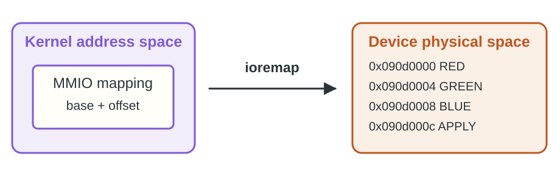
Map the device before accessing its registers.
[RENÉ] 30 seconds · 17:30–18:00 cumulative.
MMIO means memory-mapped input/output: device operations appear at addresses. The kernel must establish a suitable mapping and reserve the resource.
Stage 02 · MMIO
User space Linux kernel Hardware
Reserve, then map
let resource = bindings::request_mem_region(
RGB_MMIO_BASE as _, RGB_MMIO_SIZE as _,
c_str!("rgb").as_char_ptr());
let base = bindings::ioremap(RGB_MMIO_BASE as _, RGB_MMIO_SIZE);Essential excerpt · surrounding setup and error handling omitted
Stage 02: physical base fixed in the driver.
[RENÉ] 60 seconds · 18:00–19:00 cumulative.
Excerpt is inside the unsafe C boundary; errors and cleanup omitted. Reserve prevents resource conflicts, map gives a kernel virtual address. The stage uses base 0x090d0000 and a 0x1000 mapping; the peripheral window itself is 0x100. Do not confuse those sizes. Drop unmaps and releases.
Stage 02 · MMIO
User space Linux kernel Hardware
The order is the protocol
bindings::writel(red as u32, self.register(RGB_REG_RED));
bindings::writel(green as u32, self.register(RGB_REG_GREEN));
bindings::writel(blue as u32, self.register(RGB_REG_BLUE));
bindings::writel(1, self.register(RGB_REG_APPLY));Essential excerpt · surrounding setup and error handling omitted
Prepare all three channels. Apply last.
[RENÉ] 60 seconds · 19:00–20:00 cumulative.
MMIO is not ordinary RAM: use kernel I/O helpers. The Rust cast as u32 widens channel values for 32-bit accesses. Do not explain memory-barrier taxonomy. [PASSAGE] Cyril makes the LED change through /dev/rgb.
Stage 02 · MMIO
User space Linux kernel Hardware
Demo · The write reaches hardware
rmmod rgb
insmod /tmp/rgb-02.ko
echo 00FF00 > /dev/rgbObserve: Linux and QEMU agree. The LED turns green.
[CYRIL] 90 seconds · 20:00–21:30 cumulative.
PREP HOST: all six modules built and copied before the talk as /tmp/rgb-01.ko through rgb-06.ko. Example copy: scp -O -P 2222 .build/buildroot-output/02-mmio-fixed/build/linux-6.18.7/samples/rust/rgb.ko root@localhost:/tmp/rgb-02.ko. GUEST: lsmod after rmmod/insmod when useful; check major remains the same and recreate node only if it changed. EXPECT Linux wrote MMIO color and QEMU apply RGB(0,255,0). FALLBACK: explain those two expected observations. Stop at 90s. [PASSAGE] René: what if the hardware address changes?
Stage 03 · Device Tree
User space Linux kernel Hardware
How does Linux know the device exists?
Someone must describe the board.
[CYRIL] 15 seconds · 21:30–21:45 cumulative.
Suggested spoken question and answer before handing to René. QEMU acts as board designer and provides firmware data. OPTIONAL CUT: skip all stage-03 slides/demo; say the later modules discover their resources through firmware, then jump to 04. Still load the prebuilt 04 module directly. This saves the full 3-minute block.
Stage 03 · Device Tree
User space Linux kernel Hardware
Device Tree hands over the resources
rgb-led@90d0000 {
compatible = "qemu,rgb-led";
reg = <0x0 0x090d0000 0x0 0x100>;
};Identity + address range, provided by the board.
[RENÉ] 30 seconds · 21:45–22:15 cumulative.
Device Tree is a description, not executable driver code. QEMU emits this node. The compatible string is the matching identity; reg carries base and size. No need to teach address-cell encodings.
Stage 03 · Device Tree
User space Linux kernel Hardware
Register a platform driver with Linux
kernel::module_platform_driver! {
type: RgbDriver,
name: "rgb",
authors: ["RGB driver contributors"],
description: "Rust RGB platform and character device driver",
license: "GPL",
}Linux registers the driver, matches the device, then calls probe.
[RENÉ] 45 seconds · 22:15–23:00 cumulative.
Exact declaration from driver/stages/03-device-tree/rgb.rs. Unlike stage 01 module!, this helper arranges platform-driver registration on load and removal on unload. The implementation of platform::Driver supplies its Device Tree ID table and probe method, shown next. The character device still needs its own registration: module, platform driver and /dev node are related but distinct. Do not teach macro expansion or all metadata fields.
Stage 03 · Device Tree
User space Linux kernel Hardware
Match → probe → map the resource
[(of::DeviceId::new(c_str!("qemu,rgb-led")), ())]
let request = pdev.io_request_by_index(0).ok_or(ENODEV)?;
let mmio = KBox::pin_init(
request.iomap_exclusive_sized::<RGB_MMIO_SIZE>(), GFP_KERNEL,
)?;Essential excerpt · surrounding setup and error handling omitted
The driver asks for resource 0.
[RENÉ] 30 seconds · 23:00–23:30 cumulative.
Two separate excerpts: the identity-table entry and the mapping inside probe. probe is Linux calling us when a compatible device is available. KBox owns a kernel allocation; pin_init creates it at a stable address. Do not explain Pin generics in detail. [PASSAGE] Cyril shows the match.
Stage 03 · Device Tree
User space Linux kernel Hardware
Demo · Discovery replaces the fixed address
rmmod rgb
insmod /tmp/rgb-03.ko
dmesg | tail
echo 0000FF > /dev/rgbObserve: platform device matched, then blue.
[CYRIL] 60 seconds · 23:30–24:30 cumulative.
Precopied module; same running VM and node. Identify the probe log before sending the color. FALLBACK: the match message and expected blue are stated here. Stop at 60s. [PASSAGE] René: writing a color is useful; now request an operation.
Stage 04 · Synchronous ioctl
User space Linux kernel Hardware
A color is data. A cycle is a command.
write: set this color.
ioctl: perform this operation.
[RENÉ] 30 seconds · 24:30–25:00 cumulative.
ioctl is a syscall for device-specific commands. Introduce only the distinction needed for the cycle; skip ABI bit layouts and versioning.
Stage 04 · Synchronous ioctl
User space Linux kernel Hardware
Both sides agree on one command
const RGB_IOCTL_CYCLE: u32 = _IO('r' as u32, 0x01);
match cmd {
RGB_IOCTL_CYCLE => hw.cycle_primary_colors(),
_ => Err(ENOTTY),
}Essential excerpt · surrounding setup and error handling omitted
Python calls fcntl.ioctl(fd, command).
[RENÉ] 60 seconds · 25:00–26:00 cumulative.
The match is a simplified dispatch, not a copy-paste-ready function: actual callback converts Result to the C return value. _IO has no payload here. ENOTTY means an unsupported ioctl. Explain match as selecting a command; no Rust prerequisite.
Stage 04 · Synchronous ioctl
User space Linux kernel Hardware
The caller performs the whole cycle
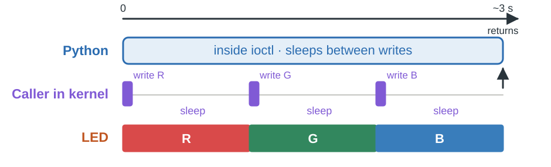
Synchronous: Python waits for the operation.
[RENÉ] 60 seconds · 26:00–27:00 cumulative.
The callback runs in the calling thread in kernel mode. During fsleep that thread sleeps; it does not burn CPU in a busy loop. Total is about 3 seconds. [PASSAGE] Cyril: ask the audience when the next Python line will run.
Illustration: time runs left to right. Short purple ticks are actual register writes; the gaps are sleeps, not continuous CPU execution. The Python and caller-in-kernel rows refer to the same thread on either side of the syscall boundary.
Stage 04 · Synchronous ioctl
User space Linux kernel Hardware
Demo · The application waits
rmmod rgb
insmod /tmp/rgb-04.ko
time python3 /tmp/rgb_ioctl_cycle.py /dev/rgbObserve: R → G → B, then Python returns (~3 s).
[CYRIL] 90 seconds · 27:00–28:30 cumulative.
PREP: copy driver/rgb_ioctl_cycle.py to /tmp before the talk. Ask for a prediction, run, interpret the time output. This is its own demo, distinct from stage 05. FALLBACK: explain the expected three-second return shown here. Stop at 90s. [PASSAGE] René: can we return earlier?
Stage 05 · Workqueue
User space Linux kernel Hardware
Let a worker continue for us
workqueue::system_long().try_spawn(GFP_KERNEL, move || {
hw.cycle_primary_colors();
// Release the held module reference after the work.
})?;Essential excerpt · surrounding setup and error handling omitted
The ioctl queues work and returns.
[RENÉ] 45 seconds · 28:30–29:15 cumulative.
Shortened excerpt: actual code also guards against concurrent cycles, pins module code while work runs and handles scheduling failure. Explain move as transferring captured state to the job. The kernel worker performs exactly the same stepped cycle; this is not Rust async/await.
Stage 05 · Workqueue
User space Linux kernel Hardware
Shared work needs shared ownership
Arc keeps the device state alive.
A module reference keeps the worker code loaded.
[RENÉ] 45 seconds · 29:15–30:00 cumulative.
Arc is a shared reference-counted owner: queued work can outlive the ioctl call. Keeping data and keeping module code alive are distinct responsibilities. No need to display the reference-counting mechanics. OPTIONAL CUT: skip this stage and say stage 06 will return from START while the hardware performs the operation; no worker is needed for that fade.
Stage 05 · Workqueue
User space Linux kernel Hardware
Who is doing the work now?
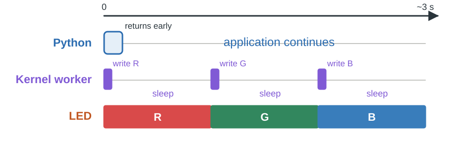
Asynchronous for Python. Still driven by software.
[CYRIL] 30 seconds · 30:00–30:30 cumulative.
Interpret the architecture before manipulating: the operation is asynchronous for the caller, but remains software-driven. The peripheral is not yet autonomous. [PASSAGE] stay with Cyril for the demo.
Illustration: use the same three-second time scale as stage 04. Python returns early; only the worker retains the stepped operation. The drawing does not imply an application completion notification in this stage.
Stage 05 · Workqueue
User space Linux kernel Hardware
Demo · Python returns before the colors finish
rmmod rgb
insmod /tmp/rgb-05.ko
time python3 /tmp/rgb_ioctl_cycle.py /dev/rgbObserve: Python returns; R → G → B continues.
[CYRIL] 60 seconds · 30:30–31:30 cumulative.
Same client as stage 04. Let the worker finish before replacing the module. FALLBACK: contrast the immediate return with the continuing expected cycle. Stop at 60s. [PASSAGE] René: now move the operation into hardware.
Stage 06 · Hardware + IRQ
User space Linux kernel Hardware
Hardware offloading: give the job to the device
CPU
→ Graphics card
→ CPU
Describe the operation. Let specialized hardware execute it.
[RENÉ] 45 seconds · 31:30–32:15 cumulative.
Introduce the term before using it for our LED. A graphics card is a familiar example: the CPU submits commands, the GPU performs rendering, and software synchronizes with completion when it needs the result. This is an analogy; do not imply every draw call produces a CPU interrupt. A workqueue only moves execution to another kernel thread; hardware offloading moves the intermediate steps into the device. [PASSAGE] René applies the same idea to the fade.
Stage 06 · Hardware + IRQ
User space Linux kernel Hardware
Let the device perform the fade
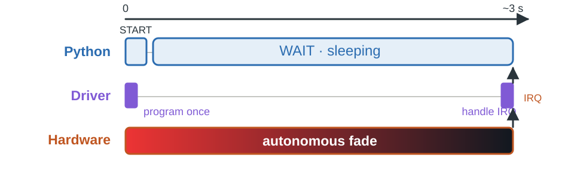
[RENÉ] 15 seconds · 32:15–32:30 cumulative.
Offloading means the device performs intermediate steps. In our virtual hardware, a QEMU timer advances the fade. This demonstrates the contract, not a physical LED circuit.
Illustration: default three-second fade, separate from the ten-second inspection demo. Only the submission and completion require driver activity. The gradient is the device autonomous work; the upward arrows are completion via IRQ and wakeup.
Stage 06 · Hardware + IRQ
User space Linux kernel Hardware
Add an operation to the register contract
Register Purpose TARGET + DURATION Where to go, and how long COMMAND + STATUS Start, cancel, busy or ready IRQ_ENABLE + IRQ_STATUS Enable and acknowledge completion
[RENÉ] 30 seconds · 32:30–33:00 cumulative.
These controls belong to the stage-06 operation. Values and offsets are in the source and usage guide; do not read a full register table aloud. Client default sets red first, then fades to black over 3000 ms.
Stage 06 · Hardware + IRQ
User space Linux kernel Hardware
START submits. WAIT waits.
io.write32(color, RGB_REG_TARGET);
io.write32(duration, RGB_REG_DURATION);
io.write32(1, RGB_REG_IRQ_ENABLE);
io.write32(1, RGB_REG_COMMAND);Essential excerpt · surrounding setup and error handling omitted
Python: START → WAIT
[RENÉ] 30 seconds · 33:00–33:30 cumulative.
Excerpt from start after validation, locking and stale-interrupt acknowledgement. START has a target/duration payload; WAIT is separate. Python sleeps inside WAIT and consumes no CPU while asleep. Other applications can run.
Stage 06 · Hardware + IRQ
User space Linux kernel Hardware
The timer belongs to QEMU
s->red = rgb_led_interpolate(s->start_red, s->target >> 16,
elapsed, s->duration_ms);
// Green and blue are updated in the same way.
if (elapsed == s->duration_ms) {
s->status = RGB_LED_STATUS_READY;
s->irq_status = 1;
rgb_led_update_irq(s);
}Essential excerpt · surrounding setup and error handling omitted
[RENÉ] 45 seconds · 33:30–34:15 cumulative.
This is inside rgb_led_tick; state publication and rescheduling are omitted. Every 20 ms of virtual time, interpolate channels; at the deadline reach the target exactly. No driver writes are needed for intermediate colors.
Stage 06 · Hardware + IRQ
User space Linux kernel Hardware
An IRQ is the device asking for attention
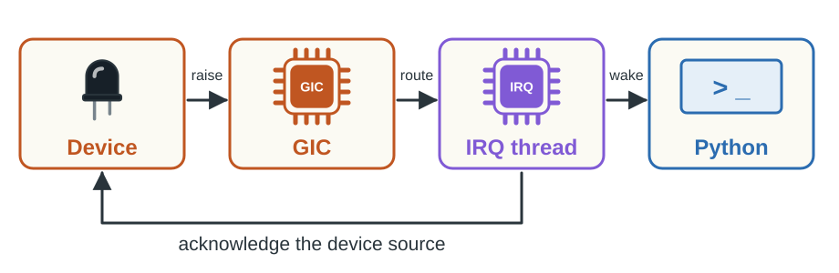
A level IRQ stays asserted until acknowledged.
[RENÉ] 60 seconds · 34:15–35:15 cumulative.
GIC is the ARM interrupt controller. Device Tree describes the wiring; the driver requests the Linux IRQ. Acknowledgement clears the device source so it stops requesting attention. Do not equate clearing this source with all interrupt-controller bookkeeping.
Stage 06 · Hardware + IRQ
User space Linux kernel Hardware
Acknowledge, record, wake
// Inside the threaded IRQ handler, after checking IRQ_STATUS:
io.write32(1, RGB_REG_IRQ_STATUS);
// After the MMIO access:
state.completed = state.submitted;
self.done.notify_all();Essential excerpt · surrounding setup and error handling omitted
Hard IRQ entry → IRQ thread → Python becomes runnable.
[RENÉ] 60 seconds · 35:15–36:15 cumulative.
Two abbreviated excerpts from the actual handler. Our hard handler requests its thread; the threaded handler checks the source, locks state, acknowledges, records completion and wakes waiters. The scheduler later gives Python CPU time. This distinction explains why the IRQ thread may use the mutex. [PASSAGE] Cyril: what evidence should we look for?
Stage 06 · Hardware + IRQ
User space Linux kernel Hardware
Sleeping is only part of the evidence
State S: the Python thread is sleeping.
IRQ counter + handler log: Linux received completion.
WAIT returns: Python was notified.
[CYRIL] 45 seconds · 36:15–37:00 cumulative.
Stage 04 also sleeps, so S alone proves nothing about IRQ delivery. Explain the three observations before running the live sequence. [PASSAGE] continue with Cyril for the final demo.
Stage 06 · Hardware + IRQ
User space Linux kernel Hardware
Demo · The hardware wakes the application
rmmod rgb
insmod /tmp/rgb-06.ko
python3 /tmp/rgb_ioctl_fade.py --duration-ms 10000# Second guest terminal; use the PID printed by Python
grep '^State:' /proc/123/status
grep rgb /proc/interruptsObserve: red → black, IRQ count +1, WAIT returns.
[CYRIL] 210 seconds · 37:00–40:30 cumulative.
PREP: /tmp/rgb_ioctl_fade.py copied; visualizer already running on host; second SSH guest terminal open. Keep the SAME stage-01 VM and load stage 06, do not reboot. Record grep rgb /proc/interrupts BEFORE starting; note PID printed, inspect S during the 10-second fade, compare counter AFTER. Point at QEMU fade complete, raising IRQ; Rust completion IRQ received, acknowledging; Python WAIT returned. Default is 3 seconds; 10 seconds leaves time for inspection. No compilation live. FALLBACK: describe the expected three observations from this slide and return to the conclusion; stop troubleshooting at the 210s budget. [PASSAGE] René brings the journey together.
What to take home
Three contracts, one complete round trip
Application contract
→ Driver contract
→ Hardware contract
The LED is simple. The boundaries are reusable.
[RENÉ] 45 seconds · 40:30–41:15 cumulative.
Recap the stages by their purpose, without reading a six-row technical table. Explain why a tiny peripheral made each contract visible. Preserve one question for the audience: who runs the operation and who reports completion?
What to take home
The hardware now speaks back.
We sent a request. We observed its completion.
[CYRIL] 15 seconds · 41:15–41:30 cumulative.
Suggested closing takeaway in your own words. [PASSAGE] René closes and invites questions.
What to take home
Try it, then ask us anything.
https://github.com/uggla/linux_rust_driver
docs/utilisation.md · make check
Cyril Marin · René Ribaud
Repository
Source code
[RENÉ] 30 seconds · 41:30–42:00 cumulative.
Close in 30 seconds: explain how to reproduce, mention six prebuilt/replayable stages and tests, acknowledge the audience. Repository URL: https://github.com/uggla/linux_rust_driver. The dashed square is a reserved location, not a scannable QR: replace it with a QR encoding this URL before the event. Keep the feedback QR separate and verify its destination. This ends the prepared 42 minutes. Keep 3 minutes slack for demo transitions or recovery; Q&A follows the 45-minute slot. Do not silently use Q&A time to finish technical content.